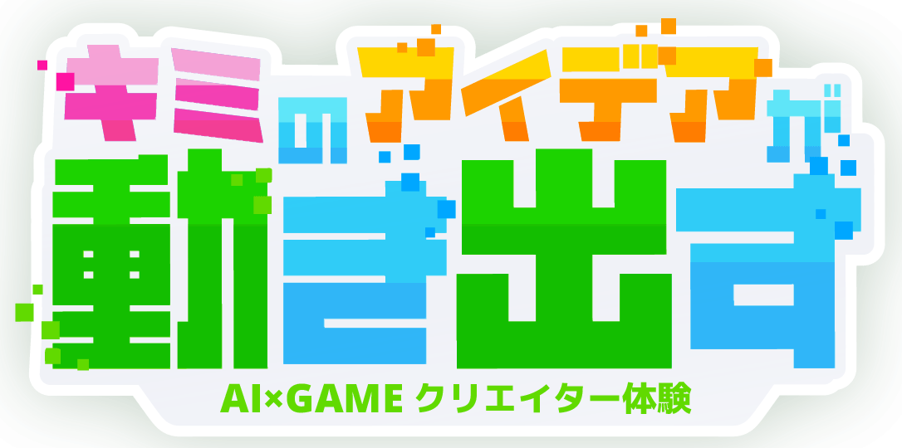

どんなゲーム？
ジャンルを選ぶと、そのステージの質問が現れるよ
主人公は？
見た目のタイプ
主人公の色は？
自分の車の色
主人公の色は？
自機の色
舞台はどこ？
背景・世界観
画面はどう動く？
主人公は画面の中。スクロールは5画面分
どうやって攻撃する？
攻撃方法
何がいる？
ステージに出るもの
ゴールの見た目は？
コースの端。触れたらクリア。見た目だけ
画面はどう動く？
背景の流れと敵の出方
主人公はどう動く？
移動方法
どうやって撃つ？
弾の出し方
敵はどう出てくる？
敵の出現パターン
どう進む？
横から見る。上から見るのはレーシング
ジャンプは？
横に走るとき
何を避ける？
だいたい2秒に1回
どうなったら勝ち？
横に走るとき
どう動く？
下に落ちるとき
何がある？
下に落ちるとき。だいたい2秒に1回
どうなったら勝ち？
下に落ちるとき
コースの形は？
道が曲がるかどうか
コースの長さは？
ゴールまでの長さ
道に何がある？
じゃまものと、ダッシュ板
相手は？
いっしょに走るCPU
コマンドは？
戦闘画面だけで選ぶ
敵の数は？
指定した数だけ出てくる
敵の攻撃は？
毎ターンの確率。前のターンとは関係ない
ボスは？
いちばん最後に出てくる
どんな遊び？
2人で交互に遊ぶよ
次の質問
「どんな遊び？」を選ぶと出るよ
その次の質問
「どんな遊び？」を選ぶと出るよ
引き分けは？
盤が埋まって、3つそろわなかったとき
盤の大きさは？
2人で交互に置くよ
置ける場所は？
置けるマスの案内
カードは何組？
同じ絵のペアの数
カードの絵は？
トランプか、イラスト
どっちが先？
最初の番
盤の色は？
マスやカードを置く台
どんなパズル？
パズルの種類
ヒントは？
つぎにできることを光らせる
時間制限は？
制限時間
ハートはいくつ？
やられたときの残り
点数は？
画面の点数
難易度は？
ゲーム全体の遊びやすさ
宝箱を見つけたよ！
保存したよ！ ファイルの名前は ゲームのもと.zip